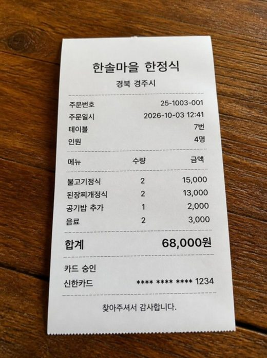

시작 전에 한 번만
준비할 것 세 가지
- Claude 유료 계정으로 claude.ai에 로그인해 주세요. 수업에서는 계정이 제공됩니다.
- 설정 → 기능(Capabilities)에서 '코드 실행 및 파일 생성'과 '아티팩트' 관련 항목이 켜져 있는지 확인해 주세요. 계산기가 채팅창 옆 창에 뜨려면 필요합니다. 메뉴 이름은 화면에 따라 조금 다를 수 있습니다.
- 메모장을 열어 두세요. 잘 된 부탁 문장을 모아 두면 2일차에 그대로 다시 씁니다.
실습 영수증 받기
압축을 풀면 receipt1~6 사진이 나옵니다. 내 영수증으로 하실 때는 카드번호와 계좌번호가 보이지 않게 찍어 주세요.
모든 단계를 이 순서로 합니다
- 기준을 말한다무엇을 어떻게 해 달라는지 문장으로 적어요
- 설명을 읽고 허락한다만들기 전에 Claude가 보여 주는 화면 설명을 읽어요
- 결과를 직접 검산한다숫자는 내 손으로 한 번 더
- 말로 고친다마음에 안 드는 곳을 그대로 말해요
1단계 · 약 15분 · 채팅창
화면부터 설명 듣고 만들기
처음 부탁에는 "만들기 전에 화면이 어떻게 생길지 먼저 설명해 줘"를 꼭 넣습니다. 설명이 마음에 안 들면 만들기 전에 고칠 수 있습니다.
claude.ai에서 새 채팅을 열고 아래 부탁 문장을 붙여 넣어 주세요.
부탁 문장 · 정산 계산기모임 정산 계산기를 만들어 줘. - 참석자 이름을 넣고, 각자 낸 돈을 항목별로 입력 - 총액, 1인당 금액, 누가 누구에게 얼마 보내면 끝나는지 표시 - 보내는 횟수는 가장 적게 - 휴대폰에서도 보기 좋게 큰 글씨와 큰 버튼 만들기 전에 화면이 어떻게 생길지 먼저 설명해 줘.
부탁 문장은 '무엇을 넣고', '무엇이 나와야 하고', '어디서 쓰는지'를 적는 것이 요령입니다.
Claude가 보여 주는 화면 설명을 읽어 주세요.
설명에서 이런 것을 찾아보세요
- 참석자, 지출 항목, 결과가 어떤 순서로 나오는지
- 버튼과 글씨가 휴대폰에서 누르기 쉬운 크기인지
- 내가 부탁한 것 중 빠진 것은 없는지 (빠졌다면 "○○도 넣어 줘"라고 먼저 말해요)
Claude가 모호한 부분은 짐작한 내용을 함께 적어 줍니다. 틀린 가정이 있으면 이때 바로잡으세요.
설명이 괜찮으면 허락해 주세요.
부탁 문장 · 허락하기좋아, 그대로 만들어 줘
채팅창 옆 창에 계산기가 뜨면 눌러 보세요.
이름을 넣고 추가 버튼을 눌러 보고, 금액을 넣어 총액이 바뀌는지 확인합니다. 이 옆 창의 앱을 아티팩트라고 부릅니다.
2단계 · 약 10분
영수증으로 검산하기
Claude가 만든 계산기도 틀릴 수 있습니다. 숫자는 내 손으로 한 번 맞춰 봐야 믿을 수 있습니다.

참석자 네 명을 넣어 주세요.
이름은 민수, 지영, 서준, 나입니다.
영수증 6장의 합계 금액을 항목으로 하나씩 넣어 주세요.
가게 이름과 영수증 맨 아래의 합계 금액을 읽어 넣습니다. 이 단계에서는 여섯 장 모두 한 사람이 냈고, 네 명이 똑같이 나누는 것으로 합니다.
receipt1은 품목을 더하면 64,000원인데 찍힌 합계는 68,000원입니다. 합계 금액(68,000원)을 쓰세요. receipt6은 일부러 구겨지고 흐리게 만든 사진이라 숫자를 잘 보고 읽어야 합니다.
결과가 아래와 같은지 확인해 주세요.
총액335,300원1인당 금액 (4명)83,825원같으면 성공입니다. 다르면 금액을 하나씩 영수증과 대조해 보세요. 어느 줄이 틀렸는지는 Claude에게 "영수증 금액 6개 합이 335,300원이 되도록 계산을 다시 점검해 줘"라고 부탁해도 됩니다.
3단계 · 약 25분
말로 하나씩 고치기
고칠 점을 한 번에 하나씩, 구체적으로 말합니다. 고친 뒤에는 2단계와 같은 금액으로 다시 검산하세요.
고치기 전에 이것만
- 고치기 전에 아티팩트 제목 메뉴에서 복제(Duplicate)해 두세요. 망가져도 원본이 남습니다.
- 고친 것이 마음에 안 들면 "방금 고친 것을 취소하고 이전 상태로 되돌려 줘"라고 말하세요.
- "좀 더 좋게 해 줘"처럼 막연하게 말하지 말고, 어디를 어떻게 바꿀지 적어 주세요.
고치기 ① 영수증 사진으로 입력하기
항목을 일일이 치지 않아도 영수증 사진을 올리면 입력되게 해 보세요.
고치는 말 · 영수증 추가지출 항목을 일일이 입력하지 않아도, 영수증 사진만 올리면 항목 이름과 금액이 입력 칸에 채워지게 해 줘. 읽은 값은 바로 추가하지 말고, 내가 확인하고 고친 다음에 추가 버튼을 누르게 해 줘. 금액을 못 읽으면 못 읽었다고 알려 줘.
실습 영수증 사진을 올려서 가게 이름과 합계가 채워지는지 보세요. 채워진 숫자는 꼭 영수증과 맞춰 본 뒤 추가하세요.
만들어 둔 완성 예시로 실습 영수증 6장을 읽혀 본 결과, 합계 금액은 여섯 장 모두 맞게 읽혔습니다(합 335,300원). 가게 이름은 세 장이 엉뚱한 글자로 읽혔으니 보이는 대로 고쳐 쓰세요. 만드는 Claude와 환경에 따라 결과는 다를 수 있습니다.
앱 안에서 사진이 안 읽히면
사진 인식은 Claude 화면과 인터넷 환경에 따라 동작하지 않을 수 있습니다. 그럴 때는 영수증 사진을 채팅창에 직접 올리고 아래처럼 부탁해 보세요. Claude가 사진을 읽어 계산기에 미리 넣어 줍니다.
고치는 말 · 사진을 채팅에 올릴 때올린 영수증 6장을 한 장씩 읽어서 가게 이름과 합계 금액을 지출 항목으로 계산기에 미리 넣어 줘. 읽기 어려운 글자나 숫자는 추측하지 말고 '확인 필요'라고 알려 줘.
고치기 ② 단톡방에 붙여 넣을 문장 복사
결과를 문장으로 복사하는 버튼을 만들어 달라고 해요.
고치는 말 · 복사 버튼정산 결과를 단톡방에 붙여 넣기 좋게 문장으로 복사하는 버튼을 만들어 줘. 총액, 지출 내역, 누가 누구에게 얼마 보내는지가 들어가게 해 줘.
버튼을 누른 뒤 메모장에 붙여 넣어서 문장이 잘 나오는지 확인하세요. 아래처럼 나오면 잘 된 것입니다.
나오는 문장 예시 (복사하지 마세요)🧾 정산 결과 총액 335,300원 (4명) [지출 내역] - 한솔마을 한정식 68,000원 (전원) - 행복셀프주유소 55,000원 (전원) ... 💸 송금 안내 (총 3번) 나 → 민수 83,825원 서준 → 민수 83,825원 지영 → 민수 83,825원
고치기 ③ 마신 사람끼리만 나누기
술값이나 밥값을 먹은 사람끼리만 나누도록 고쳐 보세요.
고치는 말 · 나눌 사람 고르기지출 항목마다 나눌 사람을 고를 수 있게 해 줘. 기본은 전원이고, 술값이나 밥값은 마신 사람끼리만 계산되게 해 줘. 항목 목록에도 누가 나누는지 보이게 해 줘.
검산: 영수증 한 장(예: 카페 보문호수 23,500원)을 세 명만 고르고 다시 계산해 보세요. 그 항목은 세 명이 나눈 금액으로 바뀌고, 고르지 않은 사람의 금액은 그만큼 줄어야 합니다. 나누어떨어지지 않는 1원 단위는 한 사람이 더 부담해서 총합이 항상 맞아야 합니다.
고치기 ④ 총무가 모두 낸 것으로 계산하기
항목마다 낸 사람을 고르는 대신, 총무 한 명이 모두 결제한 것으로 바꿔 보세요.
고치는 말 · 총무 지정항목마다 '낸 사람'을 고르지 말고, 참석자를 넣을 때 총무를 한 명 지정하게 해 줘. 모든 지출은 총무가 낸 것으로 보고 계산해서, 나머지 사람들이 총무에게 얼마를 보내면 되는지 나오게 해 줘.
검산: 총무를 민수로 두고 2단계와 같은 금액을 넣으면 지영, 서준, 나가 각각 83,825원을 민수에게 보내는 3번이 나와야 합니다. 총무를 다른 사람으로 바꾸면 받는 사람도 바뀌어야 합니다.
고치기 ⑤ 총무 계좌번호 넣기
입금할 계좌번호가 문장에 들어가게 해 보세요.
고치는 말 · 계좌번호맨 위에 총무 계좌번호를 입력하는 칸을 따로 만들어 줘. 단톡방용 문장에서 '인원별 부담액' 부분은 빼고, 그 자리에 '총무 계좌: ○○'가 들어가게 해 줘. 계좌번호를 안 넣으면 그 자리는 비워 둬.
검산: 계좌번호를 넣고 복사한 문장에 계좌가 보이는지, 비우고 복사하면 "총무 계좌: "만 남는지 확인하세요.
연습할 때는 진짜 계좌번호 대신 "국민 123-456 민수" 같은 가짜 번호를 쓰세요.
완성 확인
4단계 · 약 5분
부탁 문장 모아 두기
지금까지 고친 내용을 한 문장으로 모으면 다음에 한 번에 만들 수 있습니다. 2일차에는 이 계산기를 내 주소로 올립니다.
모임 정산 계산기를 만들어 줘. - 맨 위에 총무 계좌번호 입력 칸 (비워 둘 수 있음) - 참석자 이름을 넣고, 그중 한 명을 총무로 지정. 모든 지출은 총무가 낸 것으로 계산 - 지출 항목은 이름과 금액을 입력하고, 항목마다 나눌 사람을 고를 수 있게 해 줘 (기본은 전원) - 영수증 사진을 올리면 항목 이름과 금액이 입력 칸에 채워지게 해 줘. 바로 추가하지 말고 내가 확인하고 추가 - 결과: 총액, 인원별 부담액, 누가 누구에게 얼마 보내는지 (보내는 횟수는 가장 적게) - '단톡방용 문장 복사' 버튼: 총액, 지출 내역, 총무 계좌, 송금 안내가 들어가게 - 1원 단위가 남으면 한 사람이 더 부담해서 총합이 맞게 - 휴대폰에서도 보기 좋게 큰 글씨와 큰 버튼 만들기 전에 화면이 어떻게 생길지 먼저 설명해 줘.
이 문장을 메모장에 저장해 두세요. 한 번에 여러 가지를 부탁하면 결과가 달라질 수 있으니, 안 되는 부분은 3단계처럼 하나씩 고치는 것이 안전합니다.
돈 이야기에서 지킬 것
하지 말 것
- 카드번호·계좌번호가 보이는 영수증 올리기
- 계산기가 알려 준 대로 확인 없이 송금하기
- 실제 계좌번호를 공개된 곳에 올리기
이렇게
- 민감한 숫자는 가리고 찍기
- 금액은 영수증과 한 번 더 맞춰 보고 송금은 내가 직접
- 정산 문장은 모임 단톡방에만 붙여 넣기
막힐 때
자주 막히는 곳
채팅창 옆에 계산기가 안 떠요
설정 → 기능에서 아티팩트와 파일 생성 관련 항목이 켜져 있는지 확인하고, "계산기를 아티팩트로 다시 만들어 줘"라고 부탁해 보세요.
계산이 틀려요
2단계처럼 금액을 하나씩 영수증과 대조해 보세요. 그래도 틀리면 "총액이 335,300원이어야 하는데 ○○원으로 나와. 계산을 다시 점검해 줘"처럼 맞는 숫자와 틀린 숫자를 함께 말해 주세요.
고쳤더니 다른 게 망가졌어요
"방금 고친 것을 취소하고 이전 상태로 되돌려 줘"라고 말하세요. 미리 복제해 둔 것이 있으면 그 복제본에서 다시 시작해도 됩니다. 한 번에 여러 가지를 고치면 원인을 찾기 어렵습니다.
영수증 사진이 잘 안 읽혀요
흐리거나 구겨진 영수증(receipt6)은 읽기 어렵습니다. 합계가 안 읽히면 직접 입력하세요. 읽은 값은 언제나 영수증과 맞춰 본 뒤에 추가합니다.
복사 버튼을 눌렀는데 붙여 넣어지지 않아요
카카오톡 안에서 연 화면은 복사가 막힐 때가 있습니다. 주소를 Chrome이나 Safari에서 다시 열어 보세요. 그래도 안 되면 "복사 대신 문장을 화면에 보여 주고 길게 눌러 복사하게 해 줘"라고 부탁하세요.